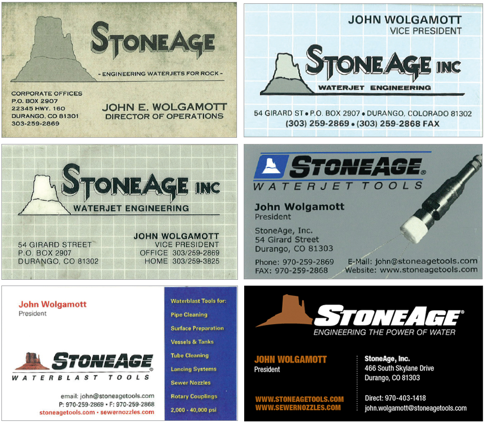

The original StoneAge logo was created by Paul Dunn sometime in late 1980. We had earlier decided on the StoneAge name due to our original focus on the mining industry and our side interest of putting homes in rock. StoneAge was also in contrast to the numerous existing business that were some variation of “Hydro”, “Aqua”, or “-tech”.
Since we were small, we wanted to stand out and be remembered. Paul suggested the Mitten Rocks as being unique and representative of our southwestern US location. Some people understand the Mitten logo (mostly locals), many others don’t, but it still seems to be a unique identifier and we have 30+ years of branding with some variation of it. I’ve attached a few of my old business cards to show the logo history.
- John Wolgamott
